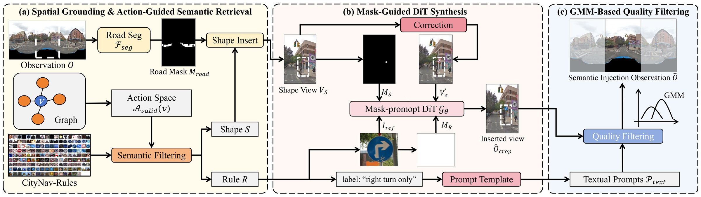
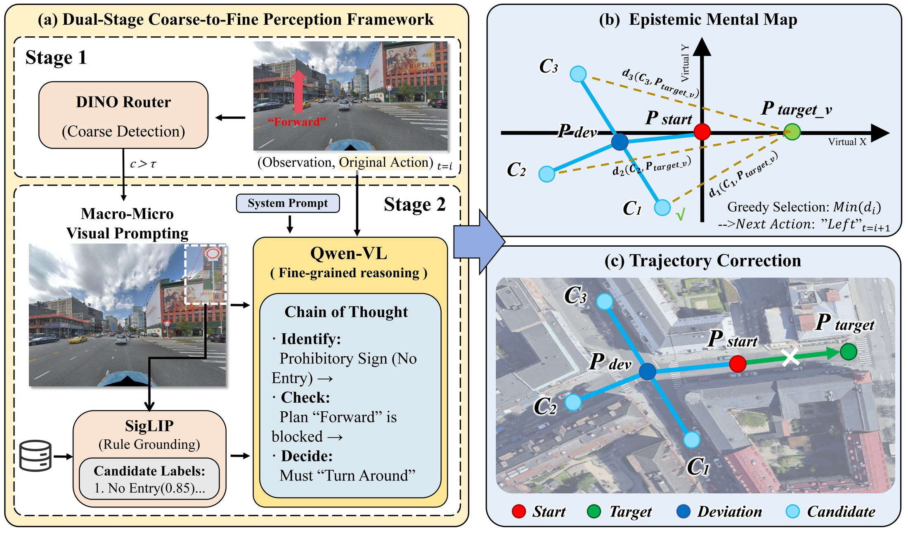
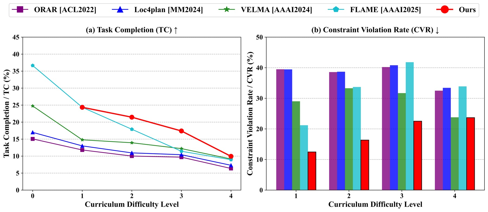
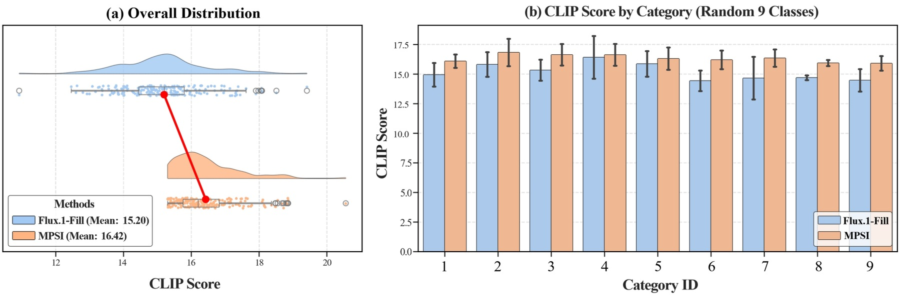
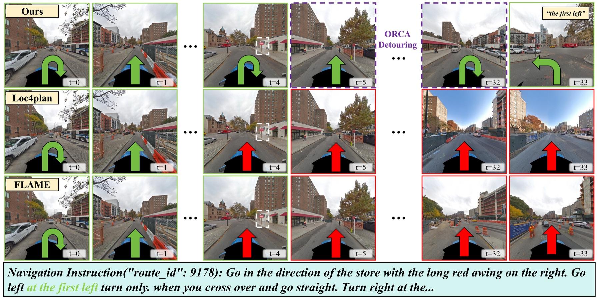

Abstract
As embodied AI transitions to real-world deployment, Vision-and-Language Navigation (VLN) must evolve from mere reachability to social compliance. Current agents often fall into a goal-driven trap, prioritizing physical geometry over semantic rules and overlooking subtle regulatory constraints. Rule-VLN is the first large-scale urban benchmark for rule-compliant navigation, spanning a 29k-node environment and injecting 177 diverse regulatory categories into 8k constrained nodes across four curriculum levels.
We further propose the Semantic Navigation Rectification Module (SNRM), a universal, zero-shot module that equips pre-trained agents with safety awareness. SNRM combines coarse-to-fine visual perception with an epistemic mental map for dynamic detour planning, significantly reducing constraint violations while restoring task completion performance.
Benchmark
Rule-VLN builds on Touchdown by introducing dynamic semantic constraints into graph traversal. Paths that are geometrically reachable may become invalid when traffic signs or regulatory signals prohibit the intended action, forcing agents to reason about whether they may proceed rather than only whether they can proceed.

Method
SNRM is a plug-and-play rectification module for pre-trained VLN agents. It routes observations through dual-stage coarse-to-fine perception, grounds candidate rule labels, and maintains an epistemic mental map to prune illegal actions and select compliant detours.

Results
SNRM substantially reduces illegal rule-crossing behavior under constrained navigation.
Rule-aware detour planning restores navigation ability without retraining the backbone.



Citation
@article{wen2026rule,
title={Rule-VLN: Bridging Perception and Compliance via Semantic Reasoning and Geometric Rectification},
author={Wen, Jiawen and Sun, Penglei and Zhang, Wenjie and Qiu, Suixuan and Xu, Weisheng and Yang, Xiaofei and Chu, Xiaowen},
journal={arXiv preprint arXiv:2604.16993},
year={2026}
}